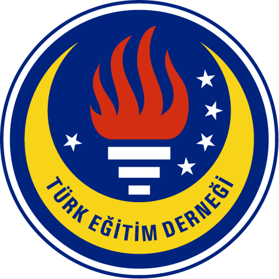
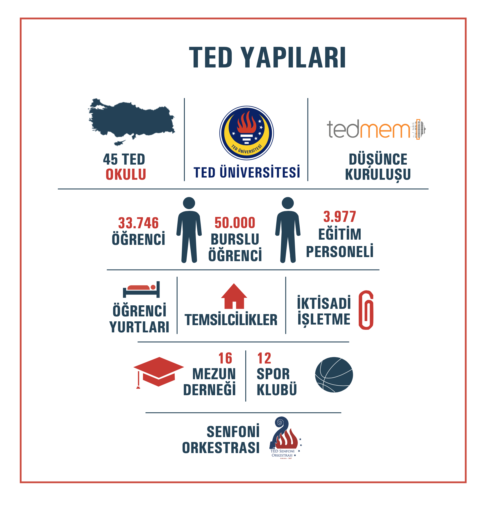

Türk Eğitim Derneği ve Burs Sistemi

31 Ocak 1928’de, bizzat Mustafa Kemal Atatürk’ün önderliğinde Birinci Büyük Millet Meclisi binasında hayat bulan Türk Eğitim Derneği, Cumhuriyetimizin eğitim alanındaki ilk sivil toplum kuruluşudur.
Atatürk’ün "Eğitimdir ki bir milleti ya özgür yaşatır ya da sefalete terk eder" vizyonunu rehber edinerek, ülkemizin aydınlık geleceğini eğitimle inşa etme misyonunu taşımaktadır.
Sadece okul açan bir kurum olmanın ötesinde, eğitimde fırsat eşitliğini savunarak nitelikli eğitimin her çocuğa ulaşmasını hedefleyen toplumsal bir meşale görevi görmektedir.
Tam Eğitim Bursu (TEB)
Burs kapsamındaki öğrenciler TED okullarında öğrenim görmekte; cep harçlığı, ulaşım, yemek, kitap ve kırtasiye, giyim ve yatılılık giderleri dernek tarafından karşılanmaktadır
Tam Destek Bursu (TDB)
Millî Eğitim Bakanlığı’nın LGS sınavında başarılı olan öğrencilere verilmektedir. Bu öğrenciler devlet okullarında öğrenimlerine devam ederken hafta sonları TED okullarında ek dersler alırlar ve sosyal faaliyetlerin içerisinde yer alırlar.
Tam Eğitim Bursu Üniversite (TEB Üniversite)
TED’in desteği ortaokul ve lise yıllarıyla sınırlı kalmaz. Tam Eğitim ve Tam Destek Burslu öğrencilerin bursları, liseden mezun olduktan sonra üniversite eğitimleri boyunca da devam etmektedir. Bu süreçte öğrencilerin staj ve kariyer gelişimleri yakından takip edilmekte, mezuniyetlerinin ardından iş hayatına geçişlerinde de destek sağlanmaktadır.
